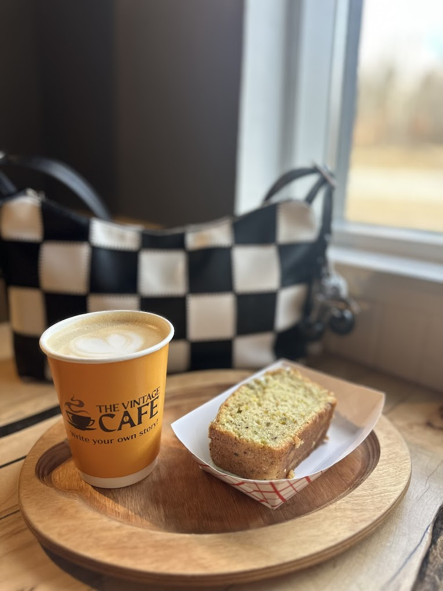
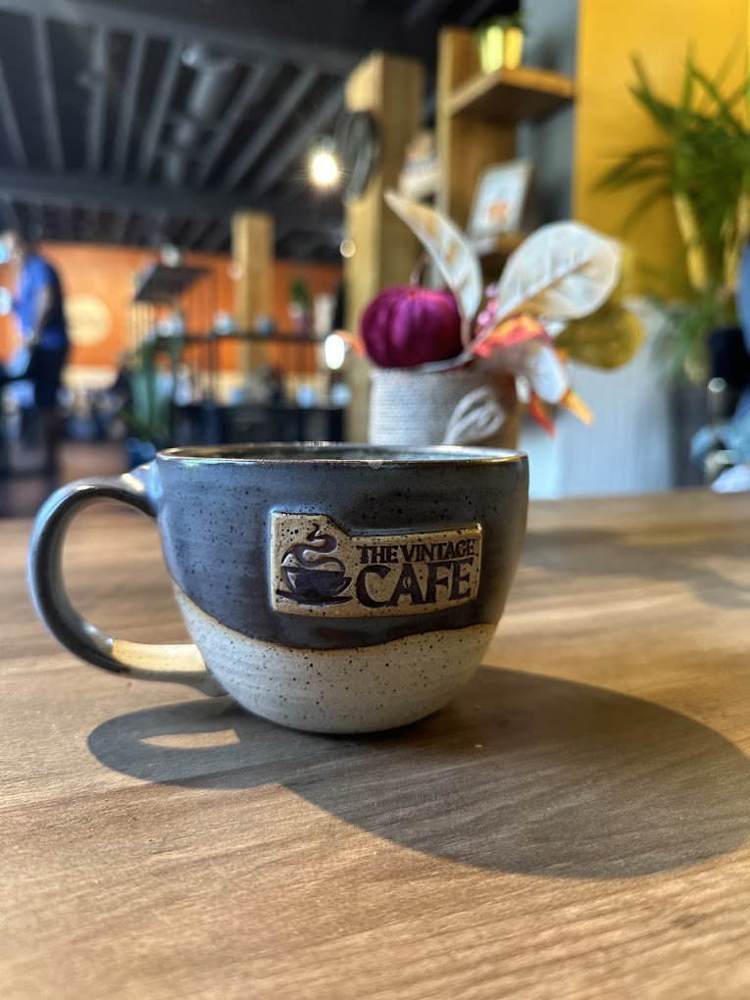

The Vintage Cafe
Sip, relax, & experience Perfect café moments.
Caledon Village
A warm roadside cafe with a vintage soul.
Settle into live-edge wood tables, window light, and the smell of coffee from the counter. The Vintage Cafe is built for slow mornings, late chats, and small moments that feel easy.

